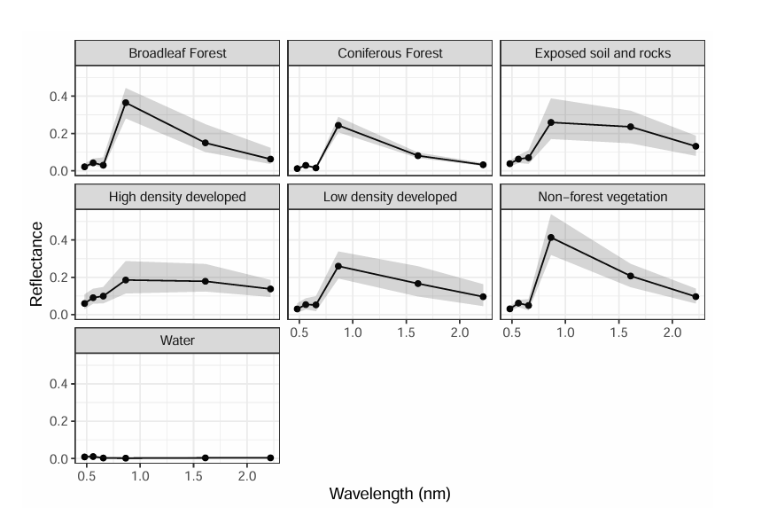
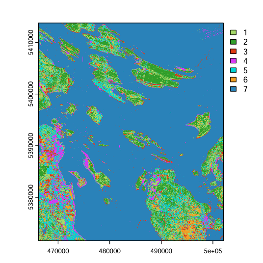
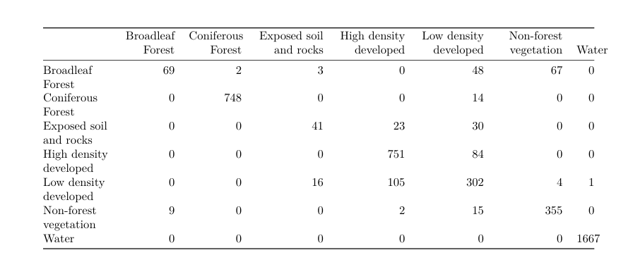

This project performs a supervised Maximum Likelihood Classification (MLC) of a Landsat 9 image to map seven land cover classes across a coastal study area in British Columbia. Training and validation polygons were manually delineated, spectral signatures were explored per class, and the classification was evaluated using a confusion matrix with overall, producer, and user accuracy metrics.
| File | Description |
|---|---|
LC09_L2SP_047026_20240716_..._SR_BSTACK.tif | Landsat 9 surface reflectance image — 6 bands (blue, green, red, NIR, SWIR1, SWIR2), 30 m resolution |
classification_polygons_AC.shp | Manually delineated training and validation polygons for 7 land cover classes |
bands_wavelength.csv | Lookup table of wavelength values for each Landsat band |
| Package | Purpose |
|---|---|
terra | Reading and plotting raster imagery |
sf | Reading and handling vector polygon data |
RStoolbox | Maximum Likelihood Classification via superClass() |
tidyverse | Data wrangling, reshaping, and ggplot2 visualization |
caret | Model training support used by RStoolbox |
A Landsat 9 image was loaded and 271 polygons were manually delineated across seven land cover classes: Broadleaf Forest, Coniferous Forest, Exposed Soil and Rocks, High Density Developed, Low Density Developed, Non-forest Vegetation, and Water. Polygons were split 70/30 into training and validation sets using stratified random sampling. Pixel values were extracted and spectral signatures (mean reflectance with 5th–95th percentile ribbons) were visualized per class across all six bands. The Maximum Likelihood Classifier was trained using RStoolbox::superClass() with 500 pixels sampled per class. Classification accuracy was assessed using a confusion matrix, with overall, producer, and user accuracies calculated from the matrix diagonal, row sums, and column sums.

Spectral signatures showing mean reflectance and 5th–95th percentile uncertainty ribbons for all 7 land cover classes across Landsat 9 bands

Classified land cover map showing 7 classes across the coastal BC study area

Confusion matrix showing prediction vs reference classification results
terrasfdplyrterra::extractggplot2 and geom_ribbonRStoolbox::superClass()diag(), rowSums(), and colSums()